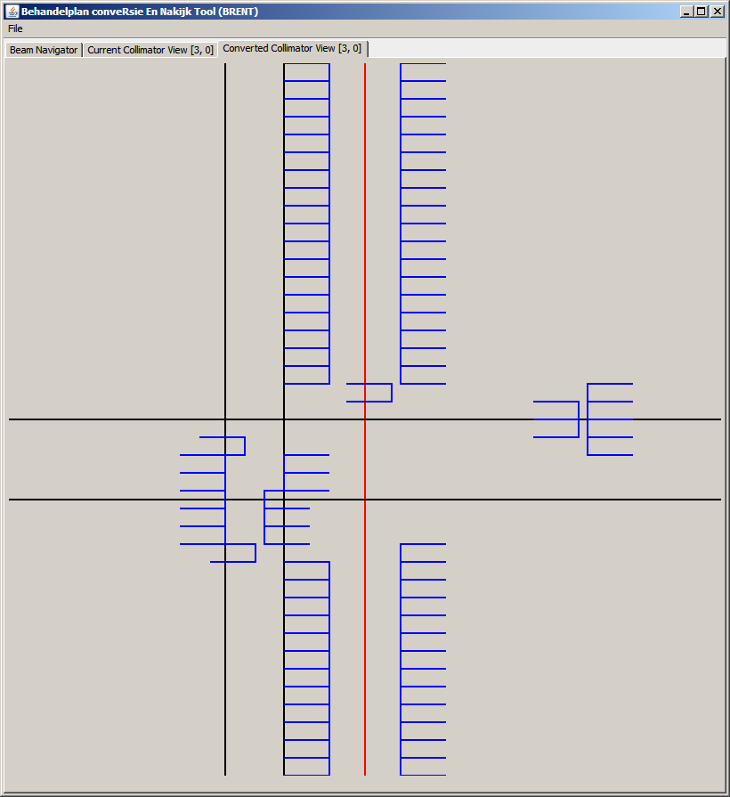

See: Description
| Class | Description |
|---|---|
| Accelerator |
Definieert de collimator constraints van een type versneller, en bevat frameconversiealgoritmes.
|
| CollimatorFile |
Representatie van een RTplan in termen van de collimator.
|
| CollimatorFrame |
Definitie van een Collimatorframe.
|
| CollimatorPanel |
Tekent een CollimatorFrame.
|
| ErrorCodes |
Definities van errorCodes en conversieStates.
|
| MainGui |
Grafische dicom collimator viewer en conversietool.
|
| MainProduction |
Commandline conversie applicatie, bedoelt voor klinische omgeving.
|
| MainStatistiek |
Commandline applicatie bedoelt om conversie statistieken te verzamelen over meerdere dicom-files.
|
| Exception | Description |
|---|---|
| InvalidNumberOfMLCXleafsException |
Foutklasse die CollimatorFile gebruikt om fouten uit DicomJar te vangen.
|
| InvalidRTplanException |
Foutklasse die CollimatorFile gebruikt om fouten uit DicomJar te vangen.
|
MainGui - Dit is een Gui applicatie die een DicomFile kan openen, en daarvan de collimator per beam per segment kan weergeven.
Geeft ook de geconverteerde file weer + conversielog zodat grafisch geverifieerd kan worden of de conversie ergens op lijkt. Kan geconverteerde file opslaan. Screenshot:
MainProduction - Een commandline applicatie die als argument een filename vereist, en mits de file converteerbaar geacht wordt deze opslaat als 'oudefilename_converted.dcm'.
Het conversielog wordt geprint naar std.err. Bedoelt voor gebruik in klinische omgeving.
MainStatistiek - Een commandline tool die naar wens aangepast moet worden om statistieken te verzamelen. Bijvoorbeeld: hoeveel dcm files zijn (momenteel) convertible?CollimatorFile - Definieert een CollimatorFile en is het entrypoint van een tool bovenop deze library. Handelt openen, dicom-interactie, sluiten, saven, conversielogs af. Beschrijft hoe een collimatorfile eruit ziet door de set collimatorframes onder te verdelen in beams en segments.
CollimatorFrame - Een dicomfile bestaat uit meerdere beams en meerdere segmenten/controlpoints. Met name dit laatste hierarchische niveau ons vaag gedefinieerd. Soms moeten controlpoints gegroepeerd worden, soms niet, en soms bevat een controlpoint enkel wig informatie, en geen collimatorconfiguraties.
Daarom leek het me handig nog een woord te introduceren, en wel een dat correspondeert met de rest van de wereld: het frame. Een frame is niets anders dan een collimatorconfig die voor bepaald tijd belicht wordt. Een frame definieert dus een collimatorvorm behorende bij een hoeveelheid tijd of hoeveelheid stralingsdosis. Een frame heeft dus MLCX, ASYMY/X leafinstellingen als voornaamste members.
CollimatorPanel - Een CollimatorPanel is een hulpklasse die gegeven een CollimatorFrame een JFrame produceert. Deze kan dan door een eventuele gui tool getekent worden, zoals MainGui.
ErrorCodes - Definieert de Errorcodes die gebruikt worden om het conversielog op te bouwen, en bevat de definities te bepalen wat een succesvol on niet succesvolle conversie inhoud (ErrorCodes.errorToState).
Accelerator - De Accelerator klasse is waar het conversiealgoritme huist en waar de definitie van de versnellers in opgeslagen zijn. De klasse wordt geinstantieerd als Agility of MLCi, en converteert het frame naar het andere type middels Accelerator.convertFrame(CollimatorFrame), zondat dat andere klassen iets van de verschillen tussen de collimators afweten.
Wel is het zo dat CollimatorFile aaneemt dat er altijd precies 2 typen zijn. Mocht er een derde type versneller bijkomen dan moet ook CollimatorFile aangepast worden.Accelerator gelezen worden, maar in het kort is de conversie als volgt:
Accelerator.MLCXspacingMax) zo ver mogelijk uit het midden te plaatsen.
Accelerator.MLCXspacingMax) zo ver mogelijk uit het midden te plaatsen.
Accelerator.minGap) en zo ver mogelijk uit het midden gezet (zonder de MLCX overtravel te overschreiden).
Deze keuze is gebaseerd op een presentatie van Dr Vivian Cosgrove "Clinical Implementation of the Elekta Agility", waar gekeken wordt wat de transmissies is in zulke scenario's.
Als Accelerator.minAngleMLCX (= vastgesteld op 10cm, omdat de presentatie data daarvan toont) niet behaalt wordt,
dan wordt de conversie als fout aangemerkt.Accelerator.initFrameMLCi(CollimatorFrame)) voeg je de posities van 2 Agility leafs samen tot 1 MLCi leaf.
Voor de hand liggende keuzes binnenkant, buitenkant, gemiddelde. Gekozen is voor buitenkant (de omhullende), met de gedachte dat de behandeling beter teveel dan te weinig straling moet afgeven.
Accelerator.minAngleMLCX) is typisch groter dan
de afmeting van het gat dat ontstaat als de kier ergens meer in het midden staat (hoogte MLCX leaf * aantal leafs tot ASYMY-jaw * Accelerator.minGap). Vergelijk:

CollimatorFile.convert().